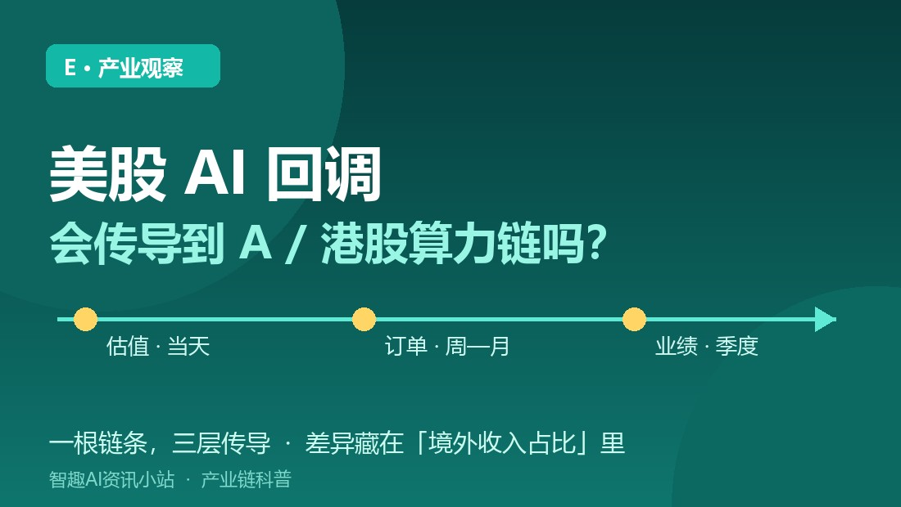
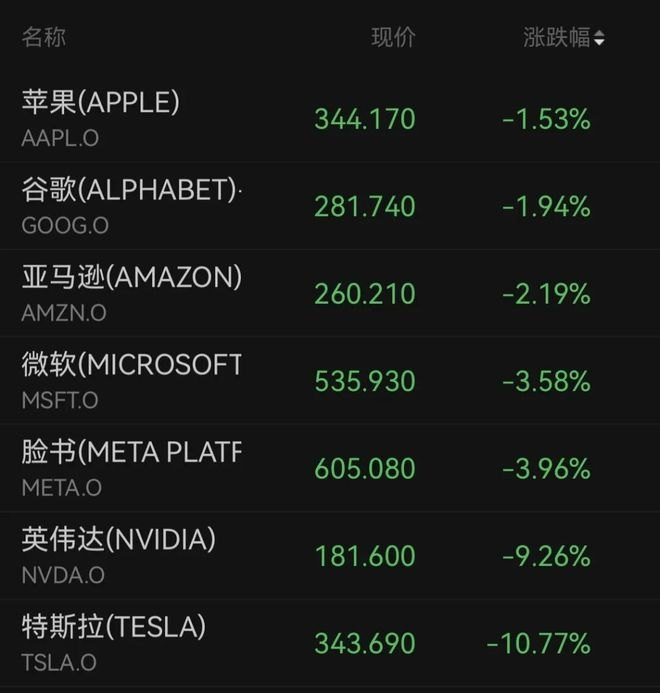
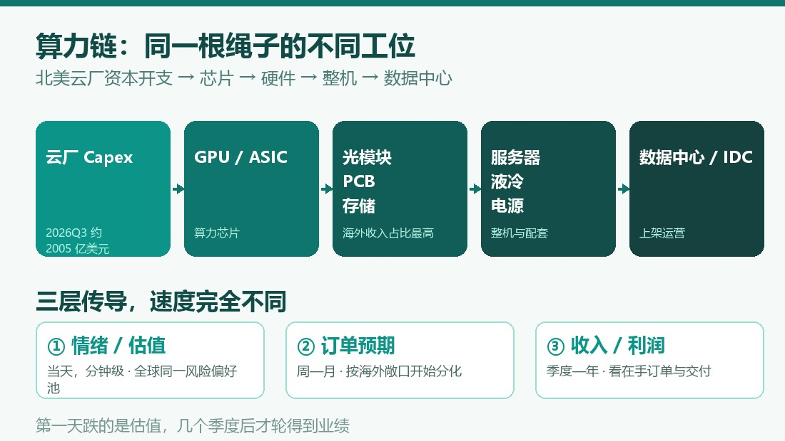
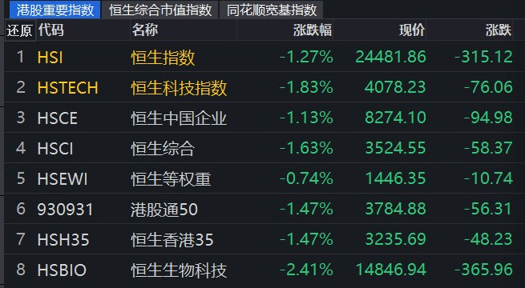

小智
AI 资讯站。只报真事，不制造焦虑。
长按识别二维码 · 关注不迷路
E · 产业观察
同一根链条，为什么有的跌 9%、有的只跌 1%？答案不在行情里，在年报的「境外收入占比」那一行。
第一天跌的是估值，几个季度后才轮得到业绩——把这两件事分开，是理解传导的第一步。

11 月 5 日美股 AI 硬件链遭遇集中抛售：纳指 -5.52%、费城半导体指数 -12.25%（2020 年 3 月以来最大单日跌幅）。第二天，A 股光模块、PCB、存储和港股算力硬件同步跟跌——但跟跌幅度差得很远：有的跌 9%，有的只跌 1%。同一根链条，为什么传导得不一样？这篇只讲产业链机制，不谈行情预测，更不构成投资建议。
美股（11 月 5 日收盘）：纳指 24315.00 点（-5.52%）、标普 500（-4.36%）、道指（-3.44%）；纳指较 10 月 6 日高点回撤约 11.9%，进入技术性调整区间。个股：英伟达 -9.26%（市值缩水超 4000 亿美元）、AMD -17.26%、美光 -17.46%、闪迪 -22.26%；科技七巨头单日合计蒸发约 1 万亿美元。
A 股（11 月 6 日收盘）：上证 -1.10%、深证成指 -2.57%、创业板指 -3.96%，全 A 成交 1.67 万亿元，通信、电子、计算机跌幅居前。光模块“易中天”：中际旭创 -9.19%、新易盛 -7.28%、天孚通信 -5.79%，剑桥科技竞价跌停；但以内需 IDC、算力租赁、国产服务器为代表的方向，调整幅度明显更小。
港股（11 月 6 日收盘）：恒指 -1.27%（24481.86）、恒生科技 -1.83%（4078.23）；算力硬件跌幅集中（剑桥科技 -12.67%、胜宏科技 -8.98%、中芯国际 -4.04%），而消费、电力板块逆势活跃。相对外围跌幅，港股整体算有韧性。

算力链不是“A 股有一套、美股有一套”，而是同一条供应链的不同工位：
云厂商资本开支 → GPU / ASIC 芯片 → 光模块、高速 PCB、HBM 与存储 → 服务器整机 → 液冷、电源、数据中心 → 上架运营
北美四大云厂 2026 年三季度合计资本开支 2005.42 亿美元（同比 +108.02%），前三季度 4932.41 亿美元。这笔钱从芯片一路流到光模块和 PCB 厂——而全球 800G/1.6T 高速光模块，国内厂商出货占比约 70%。所以美股那边“算力资产被重新定价”，A/港股这批供应商自然被一起摆上秤。

这是最容易被混淆的地方——股价一起跌，不等于订单一起变。
1. 情绪 / 估值层（当天，分钟级）：全球资金对“AI 未来现金流”给多少倍估值，是同一个风险偏好池子。美股科技股杀估值，亚太相关资产开盘就补跌。这一层最快、最猛，也最不挑公司好坏。
2. 订单预期层（周—月）：市场开始推演“如果云厂资本开支放缓，谁先受影响”。这一层开始分化——海外收入占比高的公司先被折价，内需为主的相对抗跌。
3. 收入与利润层（季度—年）：真正落到财报上，要看在手订单、交付节奏和客户实际 capex 执行。这一层最慢，且常常和第一层的方向不一致。
一句话：第一天跌的是估值，几个季度后才轮得到业绩。把第一层当第三层用，是最常见的误判。
平安证券做过一个很有解释力的拆分：
• 海外链（光模块、PCB）：境外收入 >50%（如新易盛 96.3%、中际旭创 90.6%、胜宏科技 76.8%），需求沿“北美云厂 capex → 芯片 → A 股供应商”传导，与美股相关系数约 0.23；
• 国产链（算力芯片、设备材料）：境外收入 <30%，需求来自国产替代与国内 AI 资本开支，与美股相关系数约 0.09。
这正好解释了 11 月 6 日的盘面：光模块龙头集体重挫，而内需 IDC、国产服务器方向明显抗跌，港股消费、电力甚至逆势上涨。不是“A 股跟不跟美股”，而是“这家公司的钱是谁给的”。

• 相关性不是因果：同日下跌可能只是共同的风险偏好收缩，不代表基本面同步恶化；
• 估值传导 ≠ 订单传导 ≠ 业绩传导，三层的验证方式完全不同；
• 本文是产业链科普，不是行情判断，不含任何买卖建议。真要判断某家公司，去看它的境外收入占比、在手订单、客户结构这三栏，比看隔夜纳指有用得多。
随便找一家你关注的算力公司，翻开最新年报，找到“境外收入占比”这一行：超过 50% 的，把它和北美云厂资本开支放在一起看；低于 30% 的，把它和国内智算中心建设节奏放在一起看。这一行数字，基本决定了它在隔夜美股大跌里会跌多少。
事实依据
11/5 美股：纳指 -5.52%、标普 -4.36%、道指 -3.44%、费半 -12.25%，英伟达 -9.26%、AMD -17.26%，七巨头蒸发约 1 万亿美元。11/6 A 股：上证 -1.10%、深成指 -2.57%、创业板指 -3.96%，中际旭创 -9.19%；港股：恒指 -1.27%、恒科 -1.83%。北美四大云厂 2026Q3 资本开支 2005.42 亿美元（同比 +108.02%）。平安证券：海外链境外收入 >50%、与美股相关系数 0.23，国产链 <30%、0.09。据中新网、第一财经、东方财富、中新经纬、平安证券研报（2026.10—11）。
核查时间：2026 年 11 月 6 日。本文为产业科普，不构成投资建议。
TAKEAWAY
算力链是一根绳子，但绳子上的每一股受力不同。
隔夜美股大跌传导到 A/港股，第一天是估值共振，之后才轮到订单分化——决定差异的不是「AI 概念」，而是境外收入占比。看清自己站在链条哪一节，比预测明天涨跌有用。
小智
AI 资讯站。只报真事，不制造焦虑。
长按识别二维码 · 关注不迷路
小智：看清自己在链条哪一节，比预测明天涨跌有用。